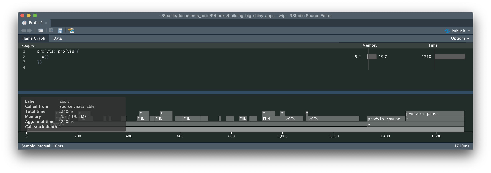

Chapter 15 The Need for Optimization
The most powerful optimization technique in any programmer’s toolbox is to do nothing.
15.1 Build first, then optimize
15.1.1 Identifying bottlenecks
As Donald Knuth puts it “Premature optimization is the root of all evil”. What does that means? That focusing on optimizing small portions of your app before making it work fully is the best way to lose time along the way. Even more if you’re not carefully using profiling tools: say your application is a little bit slow, or using too many memory, and you’ve got a specific bottleneck in your app.
// TODO: diagram of an application bottleneck
This is the very thing you should be optimizing: having faster code anywhere else expect this bottleneck won’t make your app faster—you’ll just make your app reach the bottleneck faster, but there will still be this part of your app that slows everything down. But it’s something you might only realize when the app is fully built: pieces might be fast together, but slow when put together. It’s also possible that the test dataset you’ve been using from the start works just fine, but when you try your app with a bigger, more realistic dataset, or maybe you’ve been using an example dataset so that you don’t have to query the database every time you implement a new feature, and the SQL query to the database is very slow.
15.1.2 Do you need faster functions?
Optimizing an app is a matter of trade-offs: of course, in a perfect world, every piece of the app would be tailored to be fast, easy to maintain, and elegant. But in our world, you have deadlines, limited times, and we’re all but humans. That means that at the end of the day, your app won’t be completely perfect: a software can always be better. No piece of code has ever reached complete perfection. But do you want to spend 5 days out of the 30 you’ve planned optimizing a function so that it runs in a quarter of a second instead of half a second, then realize the critical bottleneck of your app is actually the SQL query and not the data manipulation? Of course a function runnning two times faster is a good thing, but think about it in context: for example, how many times is this function called ? We can safely bet that if your function is only called once, making it twice faster is a little bit too much, unless you have unlimited time to work on your project. And in that case lucky you, you can spend a massive amount of time building the perfect software.
15.1.3 Don’t sacrifice readability
As said in the last section, every piece of code can be rewritten to be faster, either from R to R or using a lower level language: for example C or C++. You can also rebuild data manipulation code from one package to another, use complexe data structures to optimizing memory usage, etc, etc. But that comes with a price: not keeping thing simples for the sake of local optimization makes maintainance harder, even more if you’re using a lesser known language/package, which implies that you might be the only person alive being able to maintain a portion of code, or that your colleague taking over the project will have to spend hours learning the tools you’ve been building. So think about it: is local optimization worth the extra hours you’ll have to spend correcting bugs when the app will crash and when you’ll be the only one able to correct it?
For example, let’s compare both these implementations of the same function, one in R, and one in C++. Of course, the C++ function is faster than the R one—this is the very reason of using C++ with R. Though, how much faster is worth the trade-off of being sure you’ll get someone in your team to take over the maintenance if needed? Using external languages or complex data structures implies that from the start, you’ll need to think about who and how your code base will be maintain over the years.
library("Rcpp")
cppFunction("
double mean_cpp(NumericVector x) {
int j;
int size = x.size();
double res = 0;
for (j = 0; j < size; j++){
res = res + x[j];
}
return res / size;
}")
bench::mark(
cpp = mean_cpp(1:100),
native = mean(1:100),
iterations = 1000
)# A tibble: 2 x 6
expression min median `itr/sec` mem_alloc `gc/sec`
<bch:expr> <bch:> <bch:> <dbl> <bch:byt> <dbl>
1 cpp 1.88µs 2.88µs 233748. 3.32KB 0
2 native 2.91µs 3.86µs 253172. 22.76KB 0(Note: we’ll come back on bench::mark in the next chapter)
So, to sum up, there are three ways to optimize your application & R code, and the bad news is that you’ can’t optimize for all of them:
- Optimizing for speed
- Optimizing for memory
- Optimizing for readability
Leading a successful project means that you should, as much as possible, find the perfect balance between these three.
15.2 Tools for profiling
15.2.1 Profiling R code
15.2.1.1 Identifying bottlenecks
The best way to profile R code is by using the {profvis} package32, a package designed to evaluate how much time each part of a function call take.
That way, you can spot the bottleneck of your function, a task which would have to be done by guessing, which will, most of the time, come with bad guesses:
One of the lessons that the original Unix programmers learned early is that intuition is a poor guide to where the bottlenecks are, even for one who knows the code in question intimately.
Using a tool like {profvis} allows to have a details view of what takes a long time to run in your R code.
Here is how it works:
x <- function(){
profvis::pause(0.1)
lapply(1:10, function(x){
x * 10
})
y()
}
y <- function(){
profvis::pause(0.2)
1e4 * 9
z()
}
z <- function(){
profvis::pause(0.3)
print("hey")
}
profvis::profvis({
x()
})
What you see now is what is called a flame graph: it’s a detailled timing of how your function has run.
What you see on top is the expression evaluated, and on the bottom a detail of the call stack, with what looks like a Gantt diagram.
This result reads as such: the wider the function call, the more time it has taken R to computer this piece of code.
If you hover over one of the band, you’ll get more details about the function call timing.
Here it is, now you have identified bottlenecks!
15.2.1.2 Benchmarking R Code
Identifying bottlenecks is a start, but what to do now? In the chapter about optimization, we’ll dive deeper into common strategies for optimizing R & Shiny code. But before that, remember this rule: never start optimizing if you can’t benchmark this optimization. Why? Because developers are not perfect and some optimization technics might lead to slower code. Of course, most of the time they won’t, but in some cases adopting optimization technics leads to writting slower code, because we’ve missed a bottleneck in our new code. And of course, without a clear documentation of what we are doing, we will be missing it, relying only on our intuition as an assurance of speed gain.
In other words, if you want to be sure that you’re actually doing code optimization, be sure that you have a basis to compare with. How to do that? One thing that can be done is to keep an RMarkdown file with your starting point: use this notebook to keep track of what you’re doing, by noting where you’re starting from (i.e, what’s the original function you want to optimize), and compare it with the new one. By using an Rmd, you can also document the strategies you’ve been using to optimize the code: “switched from for loop to vectorize function”, “changed from x to y”, etc.
And of course, you will need to time things.
To do that, you can use the {bench} package, which compares the execution time (and other metrics) of two functions.
x <- function(size){
res <- numeric(size)
for (i in 1:size){
res[i] <- i * 10
}
return(res)
}
y <- function(size){
(1:size) * 10
}
bench::mark(
`for` = x(1000),
vectorized = y(1000),
iterations = 1000
)# A tibble: 2 x 6
expression min median `itr/sec` mem_alloc
<bch:expr> <bch:t> <bch:t> <dbl> <bch:byt>
1 for 44.43µs 46.47µs 21096. 298.9KB
2 vectorized 3.58µs 6.79µs 108026. 11.8KB
# … with 1 more variable: `gc/sec` <dbl>Here, we have an empiric evidence that one code is faster than the other: by benchmarking the speed of our code, we are able to determine which function is the fastest.
And, bonus point, {bench} takes time to check that the two outputs are the same, so that you’re sure that you’re not comparing apple and oranges!
15.2.2 Profiling Shiny
// TODO